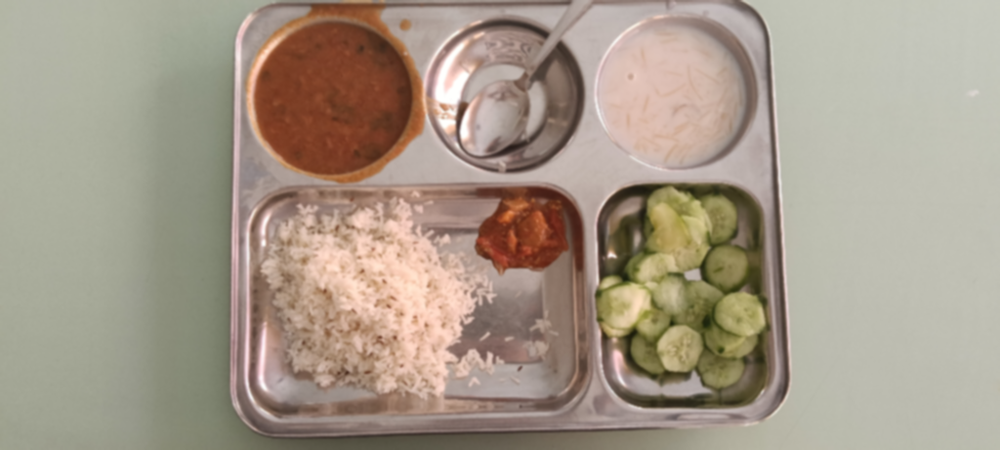
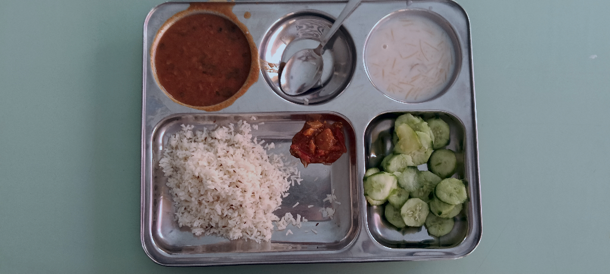
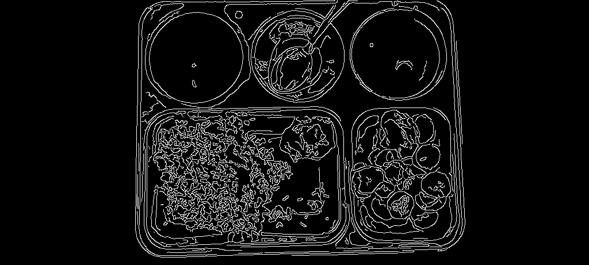
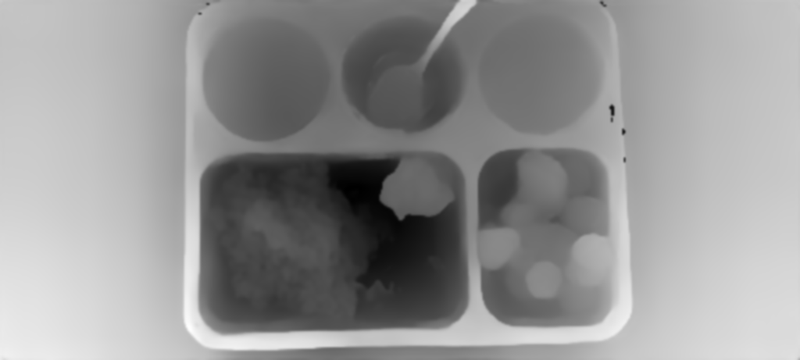
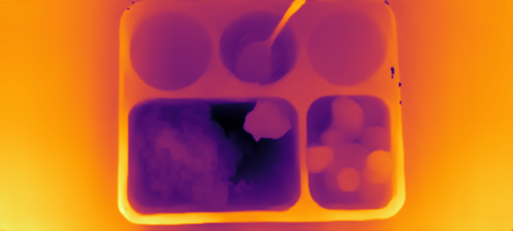
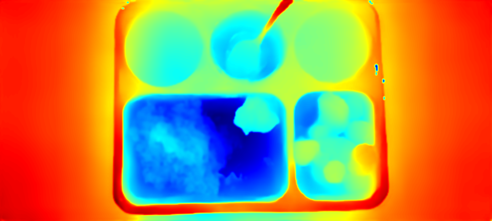
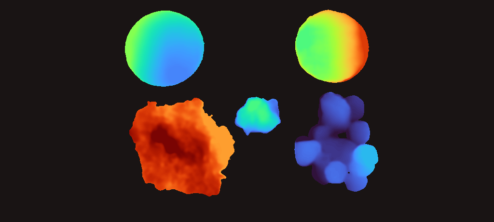
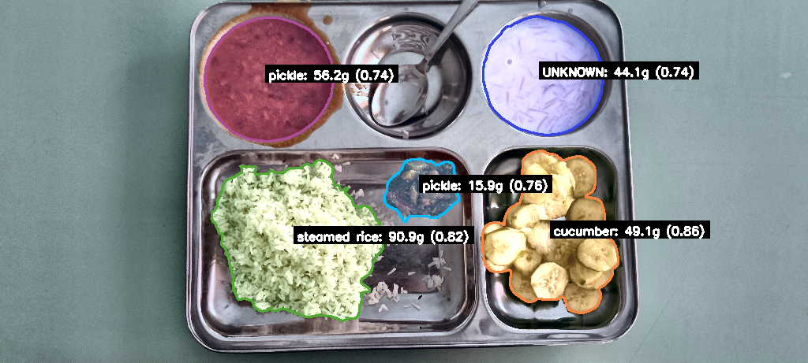

{
"resolution": "4080x1840",
"channels": 3,
"dtype": "uint8",
"expected_items": [
"seviyan",
"dal",
"steamed rice",
"cucumber",
"pickle"
],
"plate_profile": null,
"debug": true
}









[]
{
"item_id": "cucumber_1",
"area_pixels": 23298,
"estimated_height_cm": 1.02,
"volume_estimate_ml": 46.8,
"density": 1.05,
"mass_g": 49.1,
"class_label": "cucumber",
"class_confidence": 0.8933,
"depth_stability": 1.0,
"scale_confidence": 0.7,
"composite_confidence": 0.8645,
"prior_applied": true,
"diagnostics": {
"original_sam3_query": "cucumber salad",
"candidate_labels": [
"cucumber salad"
],
"menu_matching_result": "cucumber",
"final_food_label": "cucumber",
"confidence": 0.8933,
"uncertainty": 0.1067,
"original_mask_id": "mask_00",
"grouped_instance_id": "inst_0",
"fragment_count": 1,
"decision_reason": "SINGLE_INSTANCE"
},
"fragment_count": 1
}{
"item_id": "steamed rice_2",
"area_pixels": 32269,
"estimated_height_cm": 1.804,
"volume_estimate_ml": 91.6,
"density": 0.992,
"mass_g": 90.9,
"class_label": "steamed rice",
"class_confidence": 0.8014,
"depth_stability": 1.0,
"scale_confidence": 0.7,
"composite_confidence": 0.8188,
"prior_applied": true,
"diagnostics": {
"original_sam3_query": "rice",
"candidate_labels": [
"rice"
],
"menu_matching_result": "steamed rice",
"final_food_label": "steamed rice",
"confidence": 0.8014,
"uncertainty": 0.1986,
"original_mask_id": "mask_01",
"grouped_instance_id": "inst_1",
"fragment_count": 1,
"decision_reason": "SINGLE_INSTANCE"
},
"fragment_count": 1
}{
"item_id": "UNKNOWN_3",
"area_pixels": 17951,
"estimated_height_cm": 1.5,
"volume_estimate_ml": 44.1,
"density": 1.0,
"mass_g": 44.1,
"class_label": "UNKNOWN",
"class_confidence": 0.7534,
"depth_stability": 0.75,
"scale_confidence": 0.7,
"composite_confidence": 0.7388,
"prior_applied": false,
"diagnostics": {
"original_sam3_query": "food",
"candidate_labels": [
"food"
],
"menu_matching_result": null,
"final_food_label": "UNKNOWN",
"confidence": 0.7534,
"uncertainty": 0.2466,
"original_mask_id": "mask_02",
"grouped_instance_id": "inst_4",
"fragment_count": 1,
"decision_reason": "ABSTAINED_INSUFFICIENT_EVIDENCE"
},
"fragment_count": 1
}{
"item_id": "pickle_4",
"area_pixels": 5600,
"estimated_height_cm": 1.225,
"volume_estimate_ml": 11.8,
"density": 1.35,
"mass_g": 15.9,
"class_label": "pickle",
"class_confidence": 0.6958,
"depth_stability": 1.0,
"scale_confidence": 0.7,
"composite_confidence": 0.763,
"prior_applied": true,
"diagnostics": {
"original_sam3_query": "spicy condiment",
"candidate_labels": [
"spicy condiment"
],
"menu_matching_result": "pickle",
"final_food_label": "pickle",
"confidence": 0.6958,
"uncertainty": 0.3042,
"original_mask_id": "mask_03",
"grouped_instance_id": "inst_2",
"fragment_count": 1,
"decision_reason": "SINGLE_INSTANCE"
},
"fragment_count": 1
}{
"item_id": "pickle_5",
"area_pixels": 20282,
"estimated_height_cm": 1.225,
"volume_estimate_ml": 41.7,
"density": 1.35,
"mass_g": 56.2,
"class_label": "pickle",
"class_confidence": 0.6525,
"depth_stability": 1.0,
"scale_confidence": 0.7,
"composite_confidence": 0.7389,
"prior_applied": true,
"diagnostics": {
"original_sam3_query": "spicy condiment",
"candidate_labels": [
"spicy condiment"
],
"menu_matching_result": "pickle",
"final_food_label": "pickle",
"confidence": 0.6525,
"uncertainty": 0.3475,
"original_mask_id": "mask_04",
"grouped_instance_id": "inst_3",
"fragment_count": 1,
"decision_reason": "SINGLE_INSTANCE"
},
"fragment_count": 1
}

{
"food_items": [
{
"name": "cucumber",
"volume_ml": 46.8,
"mass_g": 49.1,
"calories": 8.9,
"protein": 0.3,
"carbs": 1.8,
"fat": 0.0,
"confidence": 0.8645,
"class_label": "cucumber",
"class_confidence": 0.8933,
"top_k": [
{
"label": "cucumber",
"confidence": 0.8933,
"raw_similarity": 0.8933
}
],
"identification_status": "recognized",
"menu_match": true,
"matched_menu_item": "cucumber",
"identification_confidence": 0.8933,
"segmentation_confidence": 0.8933,
"association_confidence": 1.0,
"menu_match_confidence": 1.0,
"depth_confidence": 1.0,
"scale_confidence": 0.7,
"diagnostics": {
"original_sam3_query": "cucumber salad",
"candidate_labels": [
"cucumber salad"
],
"menu_matching_result": "cucumber",
"final_food_label": "cucumber",
"confidence": 0.8933,
"uncertainty": 0.1067,
"original_mask_id": "mask_00",
"grouped_instance_id": "inst_0",
"fragment_count": 1,
"decision_reason": "SINGLE_INSTANCE"
},
"fragment_count": 1,
"food_name": "cucumber",
"instance_count": 1
},
{
"name": "steamed rice",
"volume_ml": 91.6,
"mass_g": 90.9,
"calories": 118.1,
"protein": 2.5,
"carbs": 25.4,
"fat": 0.3,
"confidence": 0.8188,
"class_label": "steamed rice",
"class_confidence": 0.8014,
"top_k": [
{
"label": "steamed rice",
"confidence": 0.8014,
"raw_similarity": 0.8014
}
],
"identification_status": "recognized",
"menu_match": true,
"matched_menu_item": "steamed rice",
"identification_confidence": 0.8014,
"segmentation_confidence": 0.8014,
"association_confidence": 1.0,
"menu_match_confidence": 1.0,
"depth_confidence"[
{
"step": "Input",
"message": "Original image saved",
"params": {
"resolution": "4080x1840"
},
"elapsed_s": 0.2934,
"input_file": null,
"output_file": "original.png",
"timestamp": "2026-11-14T20:24:58.517313"
},
{
"step": "Pipeline",
"message": "Step 1 — Preprocessing & Perspective Warp",
"params": {},
"elapsed_s": null,
"input_file": null,
"output_file": null,
"timestamp": "2026-11-14T20:24:58.517313"
},
{
"step": "Quality Gate",
"message": "PASS",
"params": {
"blur_score": 67.66,
"tilt_deg": 1.0
},
"elapsed_s": null,
"input_file": null,
"output_file": null,
"timestamp": "2026-11-14T20:24:58.656353"
},
{
"step": "Preprocessing",
"message": "Resize applied",
"params": {
"original": "4080x1840",
"target_long_edge": 1024,
"scale": 0.251
},
"elapsed_s": 0.0008,
"input_file": null,
"output_file": "01_resized.png",
"timestamp": "2026-11-14T20:24:58.681762"
},
{
"step": "Preprocessing",
"message": "Gaussian blur applied",
"params": {
"kernel": 5
},
"elapsed_s": 0.0006,
"input_file": null,
"output_file": "02_denoised.png",
"timestamp": "2026-11-14T20:24:58.702079"
},
{
"step": "Preprocessing",
"message": "LAB color normalization applied",
"params": {},
"elapsed_s": 0.0138,
"input_file": null,
"output_file": "03_color_normalized.png",
"timestamp": "2026-11-14T20:24:58.740837"
},
{
"step": "Preprocessing",
"message": "CLAHE contrast enhancement applied",
"params": {
"clip_limit": 2.0,
"tile_grid": "8x8"
},
"elapsed_s": 0.0031,
"input_file": null,
"output_file": "04_contrast_enhanced.png",
"timestamp": "2026-11-14T20:24:58.770438"
},
{
"step": "Preprocessing",
"message": "Canny edge detection",
"params": {
"low": 50,
"high": 150
},
"elapsed_s": 0.0| Step | Message | Params | Time |
|---|---|---|---|
| Input | Original image saved | {"resolution": "4080x1840"} | 0.2934s |
| Pipeline | Step 1 — Preprocessing & Perspective Warp | — | — |
| Quality Gate | PASS | {"blur_score": 67.66, "tilt_deg": 1.0} | — |
| Preprocessing | Resize applied | {"original": "4080x1840", "target_long_edge": 1024, "scale": 0.251} | 0.0008s |
| Preprocessing | Gaussian blur applied | {"kernel": 5} | 0.0006s |
| Preprocessing | LAB color normalization applied | — | 0.0138s |
| Preprocessing | CLAHE contrast enhancement applied | {"clip_limit": 2.0, "tile_grid": "8x8"} | 0.0031s |
| Preprocessing | Canny edge detection | {"low": 50, "high": 150} | 0.0056s |
| Preprocessing | Warp skipped (no 4-pt contour) | {"warped": false} | — |
| Preprocessing | Complete | {"output_size": "1024x461"} | 0.2889s |
| Pipeline | Step 2 — Compartments & Scale | — | — |
| Compartment Detection | Detected 0 compartments | {"min_area_frac": 0.02, "max_area_frac": 0.9, "compartment_count": 0} | 0.0043s |
| Scale Calibration | Fallback to bbox-based calibration | {"cm_per_pixel": 0.04469, "method": "bbox"} | — |
| Compartment Detection | Scale computed | {"cm_per_pixel": 0.04469, "pixel_area_cm2": 0.00199746, "compartments": 0, "scale_confidence": 0.7} | 0.0380s |
| Pipeline | Step 3 — Depth Estimation | — | — |
| Depth Estimation | Depth Anything depth map computed (smoothed) | {"device": "cuda", "is_metric": true, "shape": [461, 1024], "min": -91.785, "max": -60.968} | 0.5554s |
| Depth Normalization | Surface normal plane subtracted from depth | {"baseline": -69.089, "fitted_plane": true, "is_metric": true} | 0.0141s |
| Depth Metric [cm] | Metric depth height in cm directly computed | {"cm_per_pixel": 0.04469, "min_cm": 0.0, "max_cm": 6.35, "mean_cm": 0.53} | 0.0016s |
| Depth Estimation | Complete | — | 0.6190s |
| Pipeline | Step 4–6 — SAM 3 Food Identification & Segmentation | — | — |
| SAM3 | Identified 5 food items (4 recognized, 0 unlisted, 0 uncertain) | — | 33.8416s |
| Pipeline | Step 7 — Volume & Mass Estimation | — | — |
| Volume Estimation | Computed mass for 5 items | {"total_items": 5} | 0.0361s |
| Pipeline | ✅ Pipeline complete | {"total_food_items": 5, "avg_confidence": 0.7848, "scale_method": "bbox"} | 35.2643s |